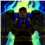

在接下来的4.5秒内，他的下次欧统攻击会造成30/55/80/105/130(+1.4AD)物理伤害，并沉默目标1.5秒。

主动:盖伦获得一个持续2/3/4/5/6秒的防御护盾，减少即将到来的30%伤害。

| 技能名 | 触发 | 技能属性 | 技能效果 | 图标 |
|---|---|---|---|---|
| 坚韧 | 被动 | 盖伦如果在9秒内不受到任何伤害，之后的每秒都会回复自己最大生命值的0.4%，小兵的伤害不会中断坚韧效果。 |  | |
| 致命打击 | Q | 冷却时间：8 | 盖伦移除自身的所有减速效果，并获得30%移动速度加成，持续1.5/2/2.5/3/3.5秒。 在接下来的4.5秒内，他的下次欧统攻击会造成30/55/80/105/130(+1.4AD)物理伤害，并沉默目标1.5秒。 |
|
| 勇气 | W | 冷却:24/23/22/21/20 |
被动：击杀一个单位会永久提供0.25护甲和魔法抗性夹成，最大值：30 主动:盖伦获得一个持续2/3/4/5/6秒的防御护盾，减少即将到来的30%伤害。 |
|
| 审判 | E | 冷却时间：9 | 盖伦快速地炫舞大剑。 | |
| 德玛西亚正义 | R | 冷却时间：120/100/80 | 大反派。 | |